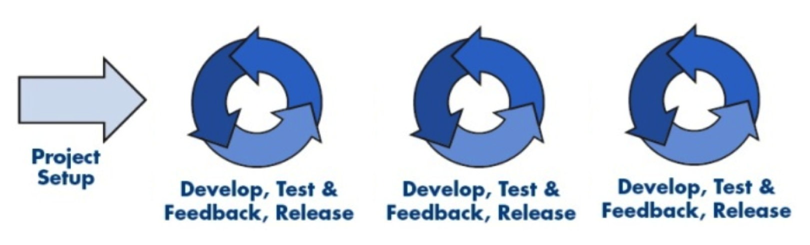

Zwinność w praktyce
Oparta na solidnej teorii
Kontekst i agenda
O czym i dlaczego będę mówił?Obecnie
- CTO w firmie Polidea
- Na rynku od 4 lat
- Aplikacje mobilne i pochodne
- 35+ osób
- Praktycznie sami inżynierowie
- Współzałożyciel Akademii Inżyniera "Szlif"
- Współzałożyciel Mobile Warsaw
Doświadczenia i przekonania
- W przeszłości:
- CTO w firmie SkyCash
- Tech Lead/Manager w Google
- Programista/Architect/HoT w firmie Computaris
- Programista w firmie Procter & Gamble
- Osobiście
- Inżynier, Entuzjasta technologii, Geek
- Z pojęciem o biznesie
- Menedżer - kiedy trzeba
- Chórzysta od 23 lat - chór Ars Cantata
Agenda
- Projekty "tradycyjne"
- Projekty zwinne
- Zwinne tworzenie oprogramowania
- Zwinne metody w praktyce
- Nowinki i ciekawostki
Projekty "tradycyjne"
Skąd się wzięło tradycyjne podejście do projektów?
Budowanie mostów
Inżynieria tradycyjna
- Doświadczenie tysięcy lat
- "Duży projekt" zanim zaczniemy
- Podział na fazy: projekt, konstrukcja, utrzymanie
- Trudno zmienić raz podjęte decyzje
- Materiały konstrukcyjne
- Stabilne wymagania
- Powtarzalność rezultatów
W trakcie budowy
Projekt tradycyjny
Model wodospadu (eng. Waterfall)
Gantt

UML
Linia montażowa
Projekty zwinne
Dlaczego tworzenie oprogramowania, to z reguły trochę inna bajka?
Inżynieria oprogramowania
- Krótka tradycja - dziesiąt lat
- Wiele metod osiągnięcia tego samego celu
- Oprogramowanie można łatwiej wyrzucić
- Etap "konstrukcji" wymagający wysiłku intelektualnego
- Ciągle zmieniające się wymagania
- Projekt nie ma końca
Działanie elektrowni jądrowej
Teoria kontroli procesów
- Nie pasuje do modelu "zdefiniowanego"
- Model "empiryczny"
- Złożony, nie do końca zrozumiały proces
- Oczekuj nieoczekiwanego
- Rezultaty nie do końca powtarzalne
- Kontrola przez częste sprawdzanie i reakcję
Cykle w tworzeniu oprogramowania
Specyfika (?) aplikacji mobilnych
- Projektów nie da się do końca określić
- Małe zmiany -> duży nakład pracy
- Ciągłe poprawki (bezpośrednia interakcja)
- Poprawki wydajnościowe
- Zmiany w projekcie wynikające z ograniczeń
- Częste wyrzucanie/dodawanie funkcjonalności
- Bardzo szybkie zmiany środowiska
Dwa lata rozwoju
Zwinne tworzenie oprogramowania
O co w tej zwinności chodzi?Budowniczy czy ogrodnik?
Manifest Zwinnego Tworzenia Oprogramowania
Zwinne praktyki
- Samo-oganizujące się zespoły
- Zespoły z mocą podejmowania decyzji
- Częste dostarczanie działających funkcjonalności
- Przytulanie zmian
- Czas przeznaczony na rozwój i naukę
- Szczera komunikacja
- (Automatyczne) Testowanie wszystkiego
- Przecieranie szlaków
- Minimalizacja strat (eng. waste)
- Ciągłe dopasowywanie sposobu pracy
- Zwinne != Szybsze
Manifest Mistrzów Oprogramowania
Istniejące metody
- SCRUM
- Iteracje o wyznaczonym czasie trwania
- Zakres ustalany na początku iteracji
- Codzienne spotkania SCRUM (15 min.)
- "User stories": abstrakcyjny rozmiar (1,2,3,5,8 ..)
- Przewidywalność "szybkości zespołu" (ang. velocity)
- Kanban
- Bez iteracji
- Minimalizacja liczby zadań "w toku"
- Ciągłe dostarczanie
Standaryzacja i "przepisy"
- Dogmatyzm jest niewskazany
- "Przepisy" przydatne na początku
- Nie ma jednego "agile"
- Zmiana jako podstawowa cecha systemów
- Certyfikaty są niepotrzebne/szkodliwe
- Ciągły rozwój i nauka
- Planowanie jest niezbędne, ale plany są bezwartościowe
- Ludzie są najważniejsi
Zwinne metody w praktyce
Jak to się sprawdza w praktyce?Stan obecny
- Łatwiej jeśli chodzi o produkt
- Ale w pracy z klientem ????
- Jaki kontrakt? "Fixed"/"T&M" ???
- Jakie estymaty?
- Estymwanie jest niezbędne ale estymaty są bezwartościowe
Praca u podstaw
- Do dziś trudno w Polsce
- USA i Europa Zachodnia - już tam są
- Budowanie ogólnej świadomości
- Zadawanie dużej liczby pytań (RFP/RFQ)
- Edukowanie klienta w trakcie prac
- Podział projektu na mniejsze części
- Opóźnianie estymat (i ograniczanie do pierwszych faz)
- Time boxing
- Budowanie zaufania
- Dobór naturalny :)
Przykład 1
Duża międzynarodowa korporacja biotechnologiczna- Pierwszy projekt "fixed price"
- Ale nie "fixed scope"
- Metoda "+1"
- Mechanizm zmian (change request) ustawiony i komunikowany od początku
- Ciągłe namawianie do "T&M"
- Po kilku miesiącach, projekty 2,3,... : T&M
Przykład 2
Gra dla startup-u w San Francisco- Próba ustalenia "fixed scope"
- Rozłożenie na czynniki pierwsze
- Zadawanie mnóstwa pytań
- Ograniczenie estymat do udzielonych odpowiedzi
- Alternatywy: Fixed + CR vs. T&M
- Rezultat: Projekt T&M
Przykład 3
Nieduży partner z Francji- Ustalenie zasad T&M
- Mały pierwszy projekt z założonymi estymatami (ale T&M)
- Fragment: małe ryzyko/duże doświadczenie
- Rezultat: po małym projekcie, współpraca T&M
Nowinki i ciekawostki
Co nas czeka wkrótce?Prostszy "SCRUM"
- "Story points": abstrakcyjne, nielogiczne
- Porównanie "story points" vs. liczba "stories"
- Uproszczony Fibonacci: 1, zbyt duży
- Dzielenie "stories" na mniejsze
"Time Boxing" a budżety
- Departamenty w korporacjach: stałe budżety
- Limit pieniędzy -> limit zakresu i pieniędzy
- Metody zwinne: ciągłe dostarczanie wartości
- Co roku miliony są topione w długich, skasowanych projektach
- Manipulujmy zakresem a nie czasem
Ruch #noestimates
- Estymaty są piekielnie trudne - często niemożliwe
- Estymaty robią najwartościowsi ludzie
- Estymaty z reguły nic nie dają
- Estymaty mogą być potrzebne do kluczowych decyzji
- Zrezygnujmy z estymat
- "It's ready when it's ready"
Zakończenie
Co chciałbym żebyście wynieśli?W skrócie
- Projekty z oprogramowaniem, nie są "tradycyjne"
- Ciągła obserwacja i reakcje są kluczowe
- Najważniejsi są ludzie
- Zwinne praktyki a nie "przepisy"
- Ciągła zmiana jest niezbędna
- To działa już dziś
- A dzięki wam - jutro może działać jeszcze lepiej